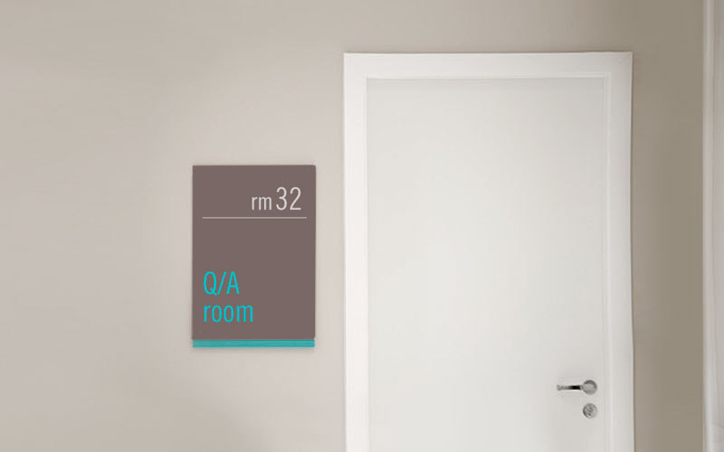
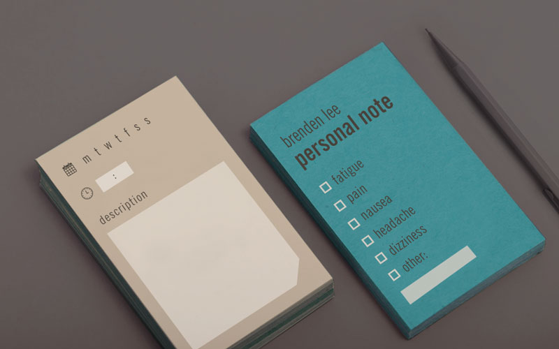
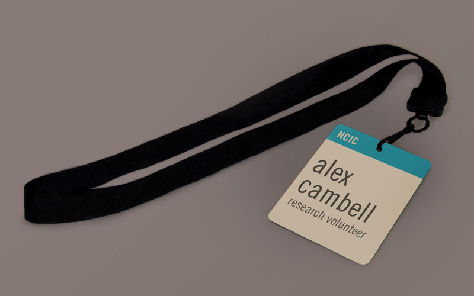
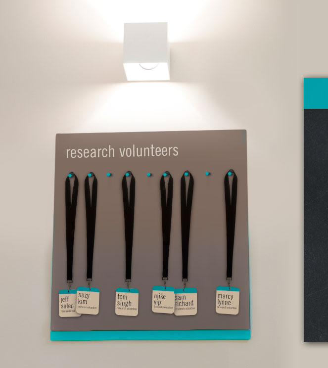
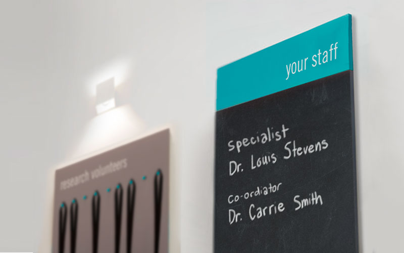

CANADIAN CANCER SOCIETY PROJECT
EXPERIENCE DESIGN AND GRAPHIC DESIGN
EXPERIENCE DESIGN FOR CLINICAL TRIAL PATIENTS
This project was a conceptual design for the Canadian Cancer Society that revolves around improving the experience for people participating in a clinical trial for cancer treatment. My team and I used graphic design and service design to create meaningful interactions between the patient and the overall experience of participating in experimental clinical trials.

SYMPTOM CARDS
Patients undergoing clinical trials are often asked to record notes in a personal journal but it is common for these notes to lack meaningful data and patients are often forgetful. We designed a set of cards that are meant to replace the journal. Symptoms and side effects are checked off and there are spaces for quick time stamping. The description of what the participant is going through is limited to encourage concise information.

INTERACTING WITH THE RESEARCHERS
These cards are also meant to improve the communication between patient and research specialists when the patient starts an appointment at a clinical trial. Each card provides a different topic based on a specific time and are easy to refer back to. Discussions happen one at a time like “conversation topic” cards
BADGES
Our second goal was to help make the participant feel like they are a part of a team, and not a experiment. We designed badges that the participants grab on their own and wear during their session. A common theme in our design is to make the participant feel like they are in control of what is happening. They are a volunteer because they made the choice to participate.


SIGNAGE
Another way to keep the participants comfortable is to display the names of their care-takers while they wait. This signage is displayed right next to the area where the participants grab their badges. Having the name of the doctors next to their own badges is meant to give the participants the feeling that they are more than test subject. They are a part of the team just like the rresearch coordinators and specialists.
